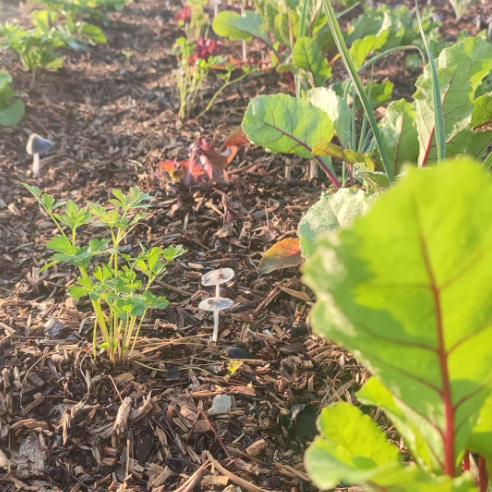

Bio-arquitectura

Les Tillandsies són el punt de partida idoni per la bio-arquitectura del futur: amb la mínima humitat i pols que puguin atrapar en tenen prou per viure, de manera que el manteniment és quasi nul i, al mateix temps, van atrapant CO₂ de l'atmosfera.
Permacultura
L'agricultura basada en la permacultura es proposa entendre i potenciar el cicle natural de les plantes i el seu entorn, combinant-les entre elles i altres formes de vida per aconseguir un sistema que funcioni quasi independentment de la intervenció humana, al mateix temps que produeix aliments.